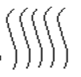

A) radio
B) calentador
C) tanque de gasolina
D) llanta de repuesto
E) loderas
F) progreso
G) aceleración
H) rotación
I) vibración
J) retardación
A) rotación
B) vibración
C) progresión
D) sucesión
E) simultaneida
F) corazón
G) ojos
H) herrajes
I) piel
J) cola
A) económico
B) pobre
C) inculto
D) enfermo
E) tacaño
F) alto
G) sabio
H) viejo
I) moreno
J) gordo
A) novia
B) nuera
C) esposa
D) casada
E) suegra
A) fácil
B) familiar
C) a menudo
D) cordial
E) íntimo
F) espectadores
G)estadio
H)perifoneadores
I) competidores
J) equipo ganador
A)una cocina
B)una estufa
C)electricidad
D)una hielera
E)una invención
F ) 9
G )10
H )12
I.) 18
J )20
A)pesada
B)suave
C) difícil producirla
D)ordinaria
E)difícil mantenerla limpia
F) superficial
G)extraño
H)injurioso
I)artificial
J)raro
A)e
B)d
C)l
D) n
E) f
F) mentir
G)caminar
H)engañar
I)robar
J)estafar
A)campanario
B)campana
C) congregación
D)órgano
E)coro
F) fino
G)subir
H)brillante
I)limpio
J)suave
A)
B)
C)
D)
F)mar
G)lista
H)mire
I)mil
J)loro
1 3 9 27 36 243
A)2
B) 81
C) 5
D) 15
E) 45
F) sus manecillas
G)la hora
H)Tieempo
H)un reloj de pulsera
J)la escuela
A)250
B)33 1/3
C)75
D)10
E) 50
F) cliente
G)paciente
H)oficina
I)licenciado
- Francisco está en este salón.
- Francisco no es miembro del club.
- Francisco no es miembro del club.
- Si las dos primeras afirmaciones son verdaderas, la tercera es (?)
A)cierta
B)falsa
C) dudosa
que aproximadamente significa estatura lo mismo altura
F)a
G)l
H)s
I)e
J)q
A)$1.85
B)$18.50
C)$19.85
D)$20.15
E)$21.50
F)conservadores
G)radicales
H)tolerantes
I)superiores
J)compadecidos
A)rosas
B)espinas
C)raíces
D)abono
E)botones
F)9
G)30
H)270
I)27
J)900
A)vaso
B)paso
C)caso
D)hongo
E)sol
F) llevar
G) mandar
H) alrededor
I) regresar
J) a través
A)
B)
C)
D)
F)15
G)24
H)240
I)60
J)40
A) este, norte
B) corto, largo
C) duro, suave
D) mojado seco
F)hoy
G)irse
H)ayer
I)tiempo
J)movimiento
A)cierta
B)falsa
C) dudosa
F)brinco
G)brindo
H)lindo
I)blanco
J)pliso
A)miedo
B)olor
C)vida
D)pensar
E)hacer
F)particular
G)ordinario
H)prevaleciente
I)inferior
J)subordinado
A) n
B) p
C) x
D) e
E) a
F)perverso
G)injusto
H)absurdo
I)improbable
J)engañoso
A)cierta
B)falsa
C)dudosa
F)sinceridad
G)sordera
H)sordera
I)pobreza
J)inteligencia
A)estirado
B)exclusivo
C)conservador
D)liberal
E)antipatriótico
F)alcalde
G)congreso
H)poder judicial
I)ciudadanía
J)gobernador
A)rara
B)ordinaria
C)fantástica
D)legítima
E)extraordinaria ?
F) el agua
G)un barco
H)una isla
I)una ola
J)una play
A)m
B)a
C)t
D)e
E)r
F G
H
I
A)
G
H
I
A)cierta
B)falsa
C) dudosa
F)jactancioso
G)desafortunado
H)hipócrita
I)pendenciero
J)triste
A)incorrecta
B)absurda
C)contradictoria
D)oscura
E)falsa
F)g
G)k
H)p
I)t
J)e
A)6
B)5
C)7
D)3
E)4
F)golpear
G)pegar
H)rodar
I)aporrear
A)2
B)3
C)4
D)0
E)1
1 2 5 6 9 10 13 14 16 18
F)11
G)12
H)19
I)15
J)17
A)$ 8.00
B)$ 7.50
C)$ 4.50
D)$ 7.00
E)$ 3.50
está nublado, la luna se verá esta noche
F)Si
G)puesto que
H)como
I)porque
J)si no
A)
B)
C)
D)
F) d
G) q
H) i
I) a
J) h
A) reciprocar
B) renunciar
C) demandar
D) repudiar
E) desquitar
F)resultado
G)éxito
H)causa
I)consecuencia
J)influencia
A)impuesto
B)imposible
C)inepto
D)exorbitante
E)desquitar
F)madera
G)ceniza
H)arena
I)hollín
J)lodo
10 11 13 16 20 25 30 38
A)12
B)15
C)19
D)24
E)31
F)3
G)5
H)9
I)10
J)2
A)cuidadosamente
B)despaciosamente
C)tardíamente
D)paulatinamente
E)oportunamente
F)40
G)50
H)60
I)45
J)35
A)la física
B)la matemática
C)la fisiología
D)la química
E)el cuerpo
F)21 cms.
G)23 3/5 cms.
H)22 ½ cms.
I)24 cms
J)25 cms.
A)
B)
C)
D)
F)cierta
G)falsa
H)dudosa
A) grama, césped
B)principiar, comenzar
C)calle, avenida
D)bonito, feo
F)h
G)m
H)t
I)g
J)d
Las preguntas 77-79 se basan en la figura de la derecha
A) 1
B) 4
C) 2
D) 3
E) 5
F)1
G)3
H)2
I)4
J)5
A) 1
B) 2
C) 3
D) 5
E) 4
F)13 1/3 mts
G)10 mts
H)15 mts
I)16 mts
J)12 mts